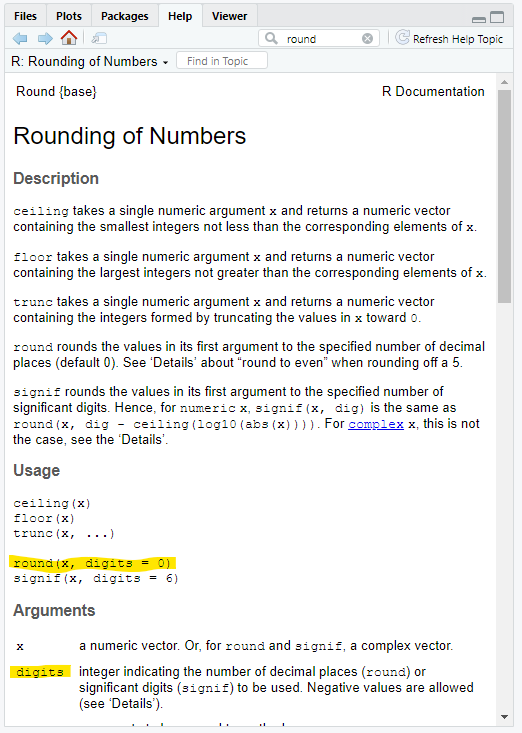

GGPlot Introduction
Data Types and Dataframes
The script for this lesson is here (right-click, Save link as)
The Lansing2016Noaa.csv is here (left-click)
For this lesson we are going to use weather data for Lansing, Michigan for all of 2016. The weather data comes from NCDC/NOAA.
To open the data:
weatherData = read.csv(file="data/Lansing2016NOAA.csv",
sep=",",
header=TRUE,
stringsAsFactors = FALSE);
In the Environment, you can see that weatherData consists of 366 observations (366 days -- it was a Leap Year) of 23 variables. In other words there are 23 different weather variables in the data (columns) for each of the 366 days (rows).
weatherData: 366 obs. of 23 variables
If we double-click on weatherData in the Environment, we can look at the data frame in the file viewer section of RStudio:
Viewing the weatherData data frame in the main section
There is extra information in the values of the dateTime column (column 1) that is not needed. We really only need the two-digit month and day, which is the 6th through the 10th characters of each dateTime value:
We can use the function substr() to subset, or pull out, a portion of the string's value.

The substr() function
note: substr() and substring() are very similar -- and both would work in this example
substr() has three arguments that we need to assign value to:
dateOnly = substr(x=weatherData$dateTime, start=6, stop=10);
This removes the year at the beginning and the time stamp at the end of all the values and saves the results to dateOnly.
We can look at the first six values of dateOnly in the Console using head() and the last 6 values using tail():
> head(dateOnly)
[1] "01-01" "01-02" "01-03" "01-04" "01-05" "01-06"
> tail(dateOnly)
[1] "12-26" "12-27" "12-28" "12-29" "12-30" "12-31"
Based on the 12 dates, we can see we have just the 2-digit month and date.
Let's say we actually want the year in the column, but we want it at the end.
In other words, we want the format to be MM-DD-YYYY:
You can use paste() to add (or, concatenate) string values together.
The paste() function -- with ... as the first "argument"
In the Help tab that the first argument in paste() is three dots ( ... ). The three dots means that paste() will take any number of objects of any type and try to paste them together.
The three dots represents sort of a pseudo-argument, meaning that for this function, any argument that does not have a name will be assigned to the three dots (i.e., unnamed arguments are objects to be pasted).
This means that you have to use argument names for everything else (e.g., sep, collapse). If you do not use the argument name, then paste() will assume the object is to be pasted.
In this case we want to paste two objects: the dateOnly vector and the string "-2016" with no separator:
dateYear = paste(dateOnly, "-2016", sep="");
Looking at the first ten values in dateYear in the Console:
> dateYear[1:10]
[1] "01-01-2016" "01-02-2016" "01-03-2016" "01-04-2016" "01-05-2016"
[6] "01-06-2016" "01-07-2016" "01-08-2016" "01-09-2016" "01-10-2016"
If you do not put the sep argument in, then sep defaults to one space, meaning an extra space between each object in the paste() -- in this case, the date and year:
dateYearMistake = paste(dateOnly, "-2016"); # sep default to " "
The results have a space after the date:
> dateYearMistake
01-02 -2016
01-14 -2016
01-26 -2016
In general, it is best to set sep="" (i.e., to nothing) -- this gives you more control of the output.
We have a column, windSpeed, where there are more decimal places than necessary.
Looking at the first ten values in the vector we can see three decimal places are used:
> weatherData$windSpeed[1:10]
[1] 15.539 14.614 9.986 7.742 7.586
[6] 7.601 4.823 6.720 7.294 17.758
One decimal place is probably enough in this case and we can round the values using the round() function:

The round() function
round() has two arguments:
Let's round windSpeed to one decimal place and save it to the vector windSpeedRounded:
windSpeedRounded = round(weatherData$windSpeed, digits=1);
And look at 10 values in windSpeedRounded to make sure it worked (this time I'll look at values 40-49):
> windSpeedRounded[40:49]
[1] 12.9 13.8 8.9 14.5 9.5 8.1 6.9 3.8 5.9
[10] 10.7
Values rounded to 1 decimal
In the Console, we are looking at values 40-49 in windSpeedRounded but the output only has ten values -- the [1] and the [10] reflect the index value of the output (the 10 values in windSpeedRounded[40:49]. Extension: index values in output
We have created two new vectors: dateYear and windSpeedRounded, and we want add them both to the weatherData data frame. There are two ways to add a vector to a data frame:
First, we will make a copy of weatherData called weatherData2. We will be creating multiple copies of weatherData so that we can see the progress of the data frames in the Environment tab. You could just manipulate the original weatherData data frame.
# copy the original data frame
weatherData2 = weatherData;
Let's add the dateYear vector to the data frame to a column called dateYear:
weatherData2$dateYear = dateYear;
Since there was no dateYear column in weatherData2, the above code added a column called dateYear to the end of the data frame and populated it with the values in the vector dateYear. Note that weatherData2 now has one more column (24) than weatherData (23). Double-click on weatherData2 in the Environment tab and scroll to the end to see the new dateYear column:
A column was added to the end of the weatherData2 data frame
When you use a column name that does not currently exist (e.g., dateYear), R will create a new column with that name. If you use a column name that already exists (e.g., windSpeed), then R will overwrite the column with the values in the vector.
We are going to put the windSpeedRounded vector in the weatherData2 data frame, but this time we are going to overwrite the windSpeed column:
weatherData2$windSpeed = windSpeedRounded;
Now the values in the windSpeed column reflect the rounded values from windSpeedRounded and there are still 24 columns:

the windSpeed column was overwritten with the values from the windSpeedRounded vector
The easiest way to delete a column from a data frame is just to set the column to NULL.
We will again create another copy of weatherData:
weatherData3 = weatherData2;
Now we will remove the dateTime column from weatherData3 by setting it to NULL:
weatherData3$dateTime = NULL;
The dateTime column, which was the first column in the data frame, has now been removed and the number of columns has dropped by 1:

The dateTime column was removed from weatherData3
You can also use the within() function to remove columns.
Using within() to remove the dateTime column:
# Within weatherData, remove the column dateTime
# weatherData3 = within(weatherData, rm(dateTime));
The advantage to this method, is that you can delete multiple columns at a time:
# weatherData3 = within(weatherData, rm(maxTemp, minTemp, avgTemp));
We will make another copy of weatherData here:
weatherData4 = weatherData3;
There is no great way to move data frame columns around in R because you cannot just say "move column X to position Y". Instead, you need to recreate the whole column order of the data frame to reflect the new position of every column -- taking care to include every column.
So, let's say we want to move the dateYear column we created earlier (sect ##) from the end of the data frame to the beginning. We essentially need to recreate the 23 columns starting with dateYear first and then have the other 22 columns follow dateYear.
Luckily, we do not have to write out all 23 column names because we are allowed to use sequences to refer to multiple columns:
# Move the last column (dateYear) to the beginning:
weatherData4 = subset(weatherData2, select=c(dateYear, maxTemp:windSusDir));
( : ) is the sequence operator and it says to take all the columns in between (and inclusive of) maxTemp and windSusDir. Since maxTemp was the first column and windSusDir was the second to last column (the last being dateYear), this basically says all other columns except dateYear.
So, select=c(dateYear, maxTemp:windSusDir)) says to order the columns with dateYear first and every other column after that.
the dateYear column moves from the end to the beginning
We will create one last data frame:
weatherData5 = weatherData4;
It is trickier to move columns in the middle because you need to keep track of all the other columns.
Let's says we want to move heatDays and coolDays right after tempDept. These are all columns in the middle of the data frame so you need to break the columns up more to order them the way you want.
Moving heatDays and coolDays after tempDept creates 4 separate column sequences (fig ##):
The four column sequences when moving columns in the middle of the data frame
The column sequences above get used in the select argument:
weatherData5 = subset(weatherData5, select=c(dateYear:tempDept,
heatDays:coolDays,relHum:wetBulbTemp,
sunrise:windSusDir));
And now we have the reordered columns:

After the middle columns were moved
We are going to use the weatherData4 data frame in the next lesson, so let's save it to a CSV file.
Quite often, people just call write.csv(), pass in the data frame and the file name to save it to:
write.csv(weatherData5, file="data/Lansing2016Noaa-2-bad.csv");
The above code will add an extra column populated by the row numbers. This is because, by default, write.csv() assumes the row numbers are row names.
To stop write.csv() from assuming the row numbers are row names, we need to set the argument row.names to FALSE:
write.csv(weatherData5, file="data/Lansing2016Noaa-2.csv",
row.names = FALSE);
In the next lesson, we will open both of these CSV files and look at the difference.
If you have any questions regarding this application, feel free to email them to the instructor here. You can attach the whole Project Folder as a zipped file.
Create a script file named app2-02.r. In the script file:
A) Save the data from Lansing2016NOAA.csv to a data frame named weatherData_app.
B) Reorder weatherData_app to put all five of the wind columns immediately after the temperature columns.
C) Remove the heatDays and coolDays columns from weatherData_app
D) Using substrings, create a dateTimeNew vector that has the dates in this format: 2-digit date, 2-digit month, 2-digit year.
E) Change tempDept in weatherData_app to 2 significant digits -- do not use round()
Answer the following in comments inside your application script:
Let's take a closer look at how the index values work in the Console output.
We are going to take a subset of the vector dateYear that goes backwards and only gives at every sixth value.
So, the subset will go: Dec 31, Dec 25, Dec 19, Dec 13...
First, let's create the sequence:
> seq(from=366, to=1, by=-6)
[1] 366 360 354 348 342 336 330 324 318 312 306 300 294 288 282 276 270
[18] 264 258 252 246 240 234 228 222 216 210 204 198 192 186 180 174 168
[35] 162 156 150 144 138 132 126 120 114 108 102 96 90 84 78 72 66
[52] 60 54 48 42 36 30 24 18 12 6
The output has 61 values (366 / 6 = 61). The first value is 366, the 18th value is 264, the 52nd value is 60, and the 61st value is 6.
When we use the sequence to subset dateYear, we also get 61 values, representing the 61 dates on the 61 rows indexed:
> dateYear[seq(from=366, to=1, by=-6)]
[1] "12-31-2016" "12-25-2016" "12-19-2016" "12-13-2016" "12-07-2016" "12-01-2016"
[7] "11-25-2016" "11-19-2016" "11-13-2016" "11-07-2016" "11-01-2016" "10-26-2016"
[13] "10-20-2016" "10-14-2016" "10-08-2016" "10-02-2016" "09-26-2016" "09-20-2016"
[19] "09-14-2016" "09-08-2016" "09-02-2016" "08-27-2016" "08-21-2016" "08-15-2016"
[25] "08-09-2016" "08-03-2016" "07-28-2016" "07-22-2016" "07-16-2016" "07-10-2016"
[31] "07-04-2016" "06-28-2016" "06-22-2016" "06-16-2016" "06-10-2016" "06-04-2016"
[37] "05-29-2016" "05-23-2016" "05-17-2016" "05-11-2016" "05-05-2016" "04-29-2016"
[43] "04-23-2016" "04-17-2016" "04-11-2016" "04-05-2016" "03-30-2016" "03-24-2016"
[49] "03-18-2016" "03-12-2016" "03-06-2016" "02-29-2016" "02-23-2016" "02-17-2016"
[55] "02-11-2016" "02-05-2016" "01-30-2016" "01-24-2016" "01-18-2016" "01-12-2016"
[61] "01-06-2016"
Again, the index values in square brackets is just given you the index value of the first value on the row. So, 12-31 is the first value, 12-01 is the 5th value, 11-25 is the 7th value, and 01-06 is the 61st value.